Testes de Personalidade
Aprovação Psycho – Descomplicando o Psicotécnico
Os testes de personalidade avaliam características individuais, tendências comportamentais, padrões emocionais e formas recorrentes de agir.
- Como você tende a reagir
- Como se comporta em grupo
- Como lida com regras, autoridade e pressão
2 Escala Likert
O teste utiliza uma escala de 1 a 7 para medir intensidade e frequência.
Nunca
Raramente
Pouco
Médio
Muito
Frequentemente
Sempre
3 Perfis Definidos
Nestas características, espera-se um posicionamento claro: 2 (Discordo) ou 6 (Concordo).
Confiança nas Pessoas
- Expectativa positiva sobre o outro
- Capacidade de cooperação
- Visão social equilibrada
Exemplo: "A maioria das pessoas é honesta"
Conformidade Legal
- Respeito às leis
- Ética
- Senso de justiça
- Ausência de autoritarismo
Exemplo: "A sociedade protege demais os criminosos"
Ordem
- Organização pessoal
- Higiene
- Planejamento
- Atenção a detalhes
- Pontualidade
Exemplo: "Viveria em locais de pouca higiene"
Deferência
- Hierarquia
- Respeito
- Capacidade de seguir liderança legítima
Exemplo: "Aceito com prazer a liderança das pessoas que admiro"
Autoconfiança
- Autoestima
- Segurança emocional
- Capacidade decisória
Exemplo: "Sinto-me inferior às pessoas que conheço"
Expansividade
- Sociabilidade
- Comunicação
- Expressividade
Exemplo: "Tenho facilidade em conversar com as pessoas"
Enfrentamento
- Controle emocional
- Reação ao estresse
- Capacidade de agir sob pressão
Exemplo: "Acho que vou desmaiar ao ver sangue"
Altruísmo
- Empatia
- Solidariedade
- Disposição para ajudar
Exemplo: "Gostaria de dedicar minha vida ao próximo"
Desejabilidade Social
- Honestidade
- Autenticidade
- Capacidade de admitir falhas humanas
Exemplo: "Já me apropriei de algo que não era meu"
4 Perfis Equilibrados
Características onde os extremos são ruins. Busque o equilíbrio: 4 (Médio).
Dominância
Avalia necessidade de controlar.
"Gosto de dizer aos outros como fazer seus trabalhos."
Exibição
- Avalia busca por atenção
- Chamar a atenção
"Gosto de estar no centro das atenções."
Mudança (Abertura)
- Flexibilidade
- Adaptação
"Sempre gosto de fazer coisas novas."
Amabilidade
- Avalia dependência emocional
- Necessidade de Afago
"É importante para mim ser aceito em minha comunidade."
Abstrato
- Pensamento conceitual
- Interesses culturais
"Gosto de filmes que contam a história de duas pessoas apaixonadas."
Intensidade
Avalia nível de energia emocional (tudo que extrapola).
"Estou explodindo de energia."
Intracepção
- Analisar e observar sentimentos
- Autoanálise e observação dos outros
"Costumo analisar meus próprios sentimentos."
5 IFP-2
Inventário Fatorial de Personalidade
Objetivo: Traçar o perfil de personalidade do indivíduo através de 13 necessidades/motivos psicológicos.
Características
- Tempo: 30 min
- Itens: 100
- Escala: 1 a 7
Macete
Nas duas últimas questões, a resposta é 2.
6 BFP
Bateria Fatorial de Personalidade (Big Five)
Avaliação baseada no modelo dos Cinco Grandes Fatores (CGF):
- 1. Extroversão
- 2. Socialização
- 3. Realização
- 4. Neuroticismo
- 5. Abertura a experiências
Características
- Tempo: 30 min
- Itens: 126
- Escala: 1 a 7
Gabarito Específico
- item 106 = 1
- item 109 = 7
- item 119 = 4
7 NEO PI-R / FFI-R
Inventário de Personalidade NEO (30 Facetas)
Versões
Estratégia de Resposta
Big Five e Facetas
- Ansiedade, Raiva, Depressão, Embaraço, Impulsividade, Vulnerabilidade
- Acolhimento, Gregarismo, Assertividade, Atividade, Busca de sensações, Emoções positivas
- Fantasia, Estética, Sentimentos, Ações variadas, Ideias, Valores
- Confiança, Franqueza, Altruísmo, Complacência, Modéstia, Sensibilidade
- Competência, Ordem, Senso do dever, Esforço, Autodisciplina, Ponderação
8 EATA
Escala de Avaliação de Tendência à Agressividade
Avalia a tendência à manifestação de condutas agressivas. Neste teste, as respostas possíveis são 0, 1 e 2.
Estratégia Principal
"As perguntas pouco importam, desde que consigamos a pontuação requerida."
A lógica é responder com pontuação máxima (2) apenas em itens específicos "leves" para atingir a meta, e zerar o restante.
Exemplos Práticos
- 1. Ao cometer um erro, mostro indiferença. Resposta 2
- 2. Culpo outra pessoa por coisas que fiz. Resposta 2
- 3. Falo dos outros pelas costas. Resposta 2
- 4. Gosto de bater em animais. Resposta 2
- 5. Gosto de brincar de empurrar/provocar quedas... Resposta 0
- 6. Gosto de deixar as pessoas com raiva de mim. Resposta 0
Ao responder 4 questões com 2, você soma 8 pontos, ficando dentro da meta de segurança.
Parâmetros
- Tempo: 20 min
- Itens: 40
- Meta: 7 a 12
9 EsAVI
Escala de Avaliação da Impulsividade
Avalia a propensão a reações rápidas e não planejadas a partir de estímulos internos ou externos, sem considerar as consequências negativas.
- Ação motora rápida
- Resposta sem reflexão prévia
- Dificuldade de concentração prolongada
- Ausência de premeditação/planejamento
Possuem os mesmos itens, apenas distribuídos de forma diferente para dificultar o treinamento de respostas memorizadas.
Fatores Negativos
- Agir de forma imediata
- Falta de concentração
- Falta de planejamento
- Envolver-se em riscos
- Audácia e temeridade
Abertura
Abertura a novidades
Fatores Positivos
- Planejamento antes de agir
- Pensar, Avaliar, Prever
- Cautela
- Paciência e persistência
- Foco e atenção
Exemplos de Resposta
"Perco a concentração facilmente"
Demonstra falta de foco -> Resposta 2
"Planejo minhas ações cuidadosamente"
Demonstra avaliação/planejamento -> Resposta 4
10 Palográfico
Teste de Personalidade Palográfico
Aplicação
Material
- Lápis nº 2 (preto) bem apontado.
- Mesa lisa e nivelada, cadeira confortável.
Fase 1: Treino (Adaptação)
- Tempo Total: 2 min e 30s
- Intervalos: 5 de 30s
Objetivo: Avaliar o nível consciente, a compreensão das instruções e a adaptação instrumental à tarefa.
Fase 2: Teste (Avaliação)
- Tempo Total: 5 minutos
- Intervalos: 5 de 1 min
Objetivo: Avaliar a produtividade real, a fadiga, o comportamento expressivo (inconsciente) e a capacidade de manter o ritmo e a atenção concentrada.
Fatores Avaliados
Qualidade
A qualidade dos traços e da organização espacial reflete aspectos profundos da personalidade, como equilíbrio emocional, clareza mental, organização e adaptabilidade social.
Nota: Usaremos como referência de qualidade os palos que já vêm impressos na folha de teste.
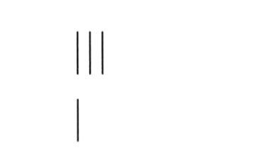1. Distância entre os palos (Expansividade)
Refere-se à necessidade de contato interpessoal e liberdade.
Aumentada / Muito Larga (> 4,6 mm)
- Interpretação: Extroversão, expansividade, confiança e necessidade de contato.
- Se excessiva (> 5,8 mm): Pode indicar exibicionismo, superficialidade, dispersão e gasto desnecessário de energia.

Normal / Média (3,3 a 4,5 mm)
- Interpretação: Equilíbrio emocional, boa adaptação ao ambiente, organização, visão clara e ponderação.
Estreita / Diminuída (< 3,2 mm)
- Interpretação: Introversão, prudência, economia, capacidade de concentração e detalhismo.
- Se excessiva (< 1,0 mm): Avareza, desconfiança, fechamento em si mesmo e inibição.
Evitar Agrupamentos
Podem indicar impulsividade.
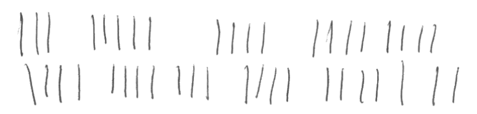Evitar Cruzamentos
Indicam insegurança, confusão ou agressividade.
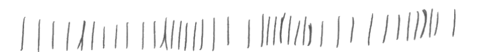2. Inclinação dos Palos (Afetividade)
Reflete a necessidade de contato com os outros, a espontaneidade afetiva e o equilíbrio entre a razão e a emoção.
Vertical (Reta - 90º)
Predomínio da razão sobre a emoção. Indica autocontrole, estabilidade, firmeza de atitudes, constância e maturidade.
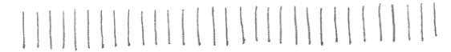Inclinada à Direita (Destra)
Extroversão e movimento em direção ao outro (futuro). Indica facilidade de relacionamento e afetividade expressiva.
Se excessiva: Dependência afetiva, falta de controle, sugestionabilidade.
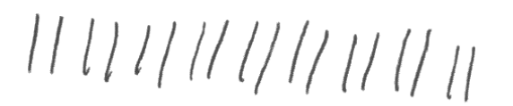Inclinada à Esquerda (Sinistra)
Introversão e movimento de recuo (passado/Eu). Indica desconfiança, repressão dos afetos e cautela.
Aspecto Negativo: Medo de entrega, narcisismo ou dissimulação.
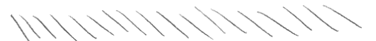Oscilante (Mista)
Ambivalência afetiva. Indica dúvidas, indecisão, luta interna entre a necessidade de contato e o medo dele (conflito razão x emoção).
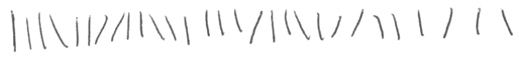3. Tamanho dos palos (Autoestima)
Refere-se à autovalorização e confiança pessoal.
Aumentado / Grande (> 9,8 mm)
- Interpretação: Expansividade, autoconfiança, ambição, liderança e vitalidade.
- Se excessivo (> 12,5 mm): Euforia, falta de senso crítico, vaidade ou megalomania.
Normal / Médio (7,0 a 9,7 mm)
- Interpretação: Equilíbrio afetivo, autocontrole, constância e estabilidade de comportamento.
Diminuído / Pequeno (< 6,8 mm)
- Interpretação: Timidez, modéstia, sentimento de inferioridade, mas também alta capacidade de análise e minúcia.
4. Direção das Linhas (Humor e Vontade)
Horizontal
Estabilidade de humor, disciplina e constância de objetivos.
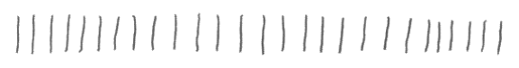Ascendente
Otimismo, ambição, ardor e autoconfiança. Pode indicar arrogância se excessivo.
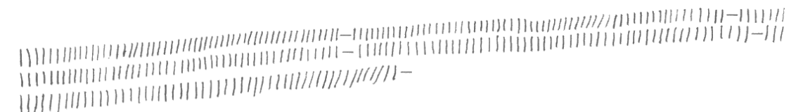Descendente
Pessimismo, falta de energia, fadiga física ou psíquica, desânimo.
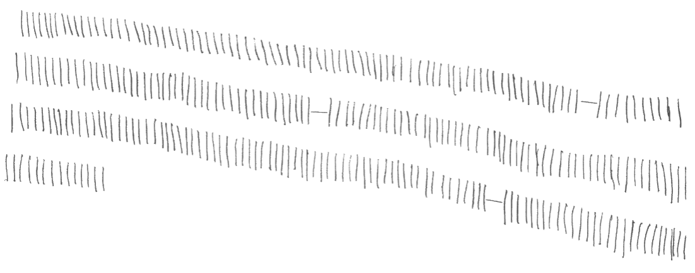Serpentina / Ondulante
Diplomacia, mas também insegurança, sugestionabilidade, falta de firmeza.
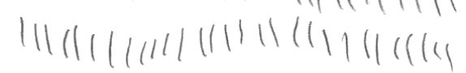5. Distância entre as linhas
Avalia o distanciamento que o indivíduo deseja manter em relação aos outros, a clareza nas relações e a percepção de limites.
Muito Aumentada (> 10,8 mm)
- Interpretação: Isolamento acentuado, dificuldade de contato, excesso de formalidade e escrúpulos.
Média / Normal (2,7 a 8,0 mm)
- Interpretação: Equilíbrio nas relações interpessoais. Respeita o espaço do outro e faz-se respeitar.
Diminuída / Próxima ( < 2,6 mm)
- Interpretação: Facilidade de contato, sociabilidade e espontaneidade.
- Se excessiva: Indiscrição, dificuldade em respeitar a privacidade alheia.
6. Margens (Adaptação e Organização)
Margem Esquerda (O Passado / O Eu)
Normal / Equilibrada
Boa adaptação social, ordem interna.
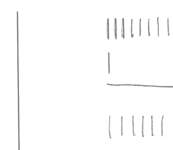Larga (Afastada)
Extroversão, desprendimento. Se excessiva: Descuido.
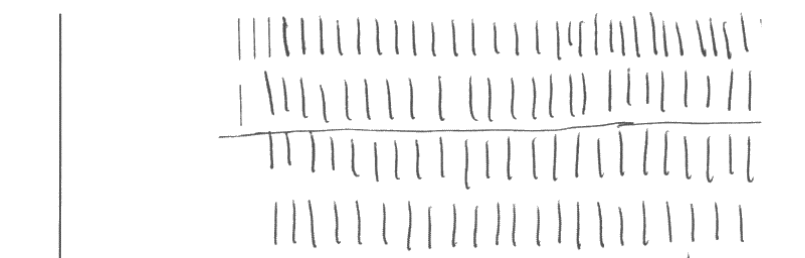Estreita (Colada)
Introversão, economia, apego ao passado.
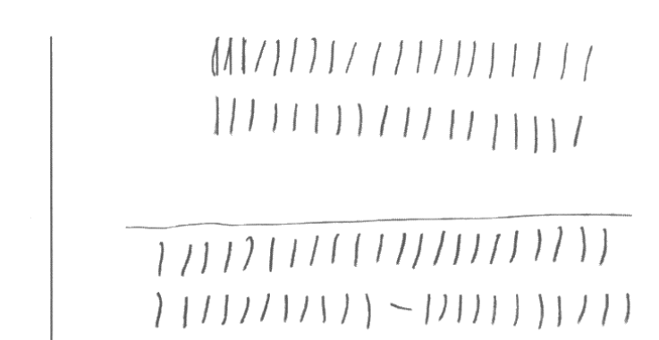Margem Direita (O Futuro / O Outro)
Normal
Boa adaptação, autocontrole, vitalidade.
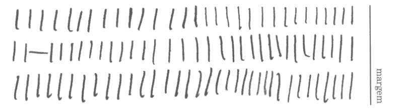Estreita (Vai até o fim)
Decisão, coragem, sociabilidade.
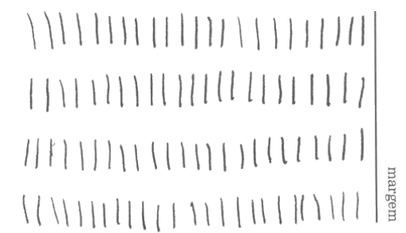Larga (Para antes)
Temor do futuro, insegurança, medo.
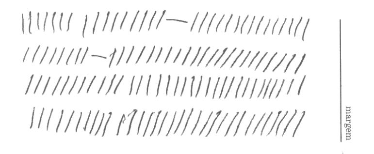7. Irregularidades Específicas
Tremores
Emoção forte, instabilidade ou substâncias.
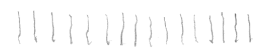Palos quebrados
Queda de energia, fadiga intensa.
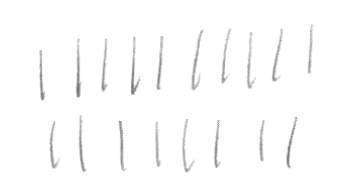Correções/Retoques
Insegurança, ansiedade, TOC.
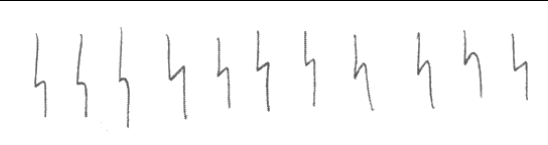Ganchos (Agressividade)
Tenacidade e agressividade.
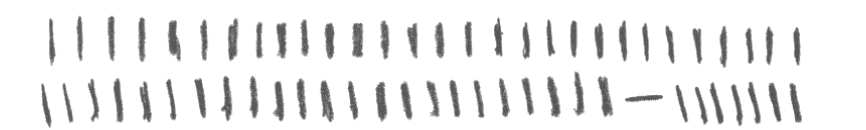Atenção aos Ganchos
Calcula-se a porcentagem de ganchos. Acima de 15% indica agressividade excessiva e conflito frequente.
2. Tirar totalmente o lápis do papel antes de mover para o lado.
3. Controlar a pressão e a pressa.
Oscilação (Ritmo)
Avalia a estabilidade da produtividade e o controle emocional através do cálculo do NOR.
META DO NOR
2,2 a 4,1
Busque manter sempre a mesma quantidade de traços em cada tempo.
Quantidade (Produtividade)
Reflete a capacidade laborativa e a energia vital.
| Nível | Quantidade | Interpretação |
|---|---|---|
| Muito Baixa | < 321 | Lentidão excessiva |
| Baixa | 321 - 468 | Produtividade reduzida |
| Média | 469 - 734 | Bom rendimento |
| Alta | 735 - 1038 | Alta produtividade |
| Muito Alta | > 1038 | Agitação / Ansiedade |
Meta de Quantidade
Para garantir aprovação com folga.